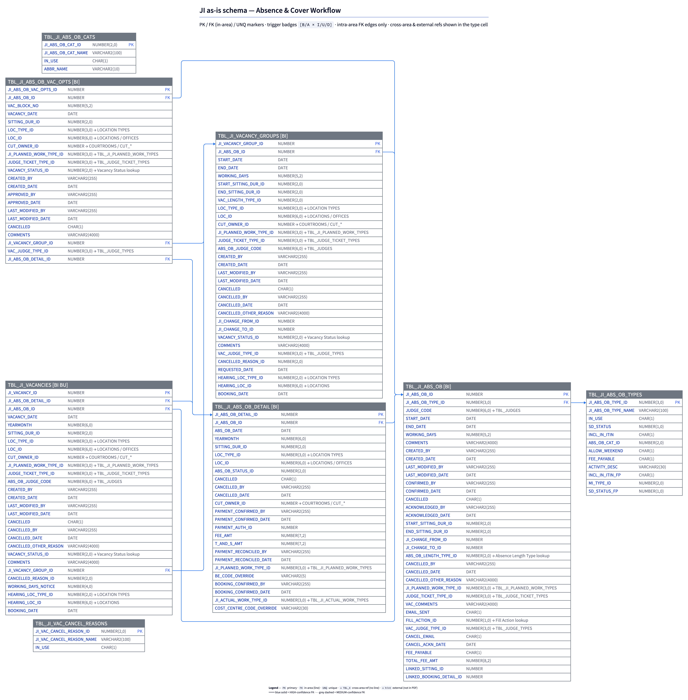

Database — Absence & Cover Workflow
8 tables: the absence record (TBL_JI_ABS_OB) and its daily breakdown, absence categories/types, vacancy auto-creation, vacancy groups, and cancellation reasons. Internal FK chain: ABS_OB → ABS_OB_DETAIL → VACANCIES.

Source PNG: docs/architecture/asis/database/ji_schema_absence-cover.png · See the companion reference for trigger bodies and external-reference inventory.
Source: docs/architecture/asis/database/ji_schema_absence-cover.png